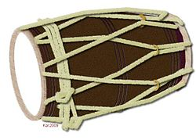

The dholak is a South Asian two-headed hand-drum.
It may have traditional cotton rope lacing, screw-turnbuckle tensioning or both
combined: in the first case steel rings are used for tuning or pegs are twisted
inside the laces.
The dholak is mainly a folk instrument, lacking the exact tuning and playing
techniques of the tabla or the pakhawaj.
The drum is pitched, depending on size,
with an interval of perhaps a perfect fourth or perfect fifth between the two
heads.
It is related to the larger Punjabi dhol and the smaller dholki.
The smaller surface of the dholak is made of goat skin for sharp notes and the
bigger surface is made of buffalo skin for low pitches, which allows a
combination of bass and treble with rhythmic high and low pitches.
The shell is sometimes made from sheesham wood (dalbergia sissoo) but cheaper
dholaks may be made from any wood, such as mango. Sri Lankan dholaks and dholkis
are made from hollowed coconut palm stems.

Usage:
It is widely used in qawwali, kirtan, lavani and bhangra. It was formerly used
in classical dance. Indian children sing and dance to it during pre-wedding
festivities.
It is often used in Filmi Sangeet, in chutney music, chutney-soca,
baitak gana, taan singing, bhajans, and the local Indian folk music of Jamaica,
Suriname, Guyana, Caribbean, South Africa, Mauritius, and Trinidad and Tobago,
where it was brought by indentured immigrants.
In the Fiji Islands the dholak is
widely used for Indian folk music, bhajan and kirtan. It is mostly used in
India.
The dholak's higher-pitched head is a simple membrane while the bass head,
played usually with the left hand, has a compound syahi to lower the pitch and
enable the typical Dholak sliding sound , often the caked residue of mustard oil
pressing, to which some sand and oil or tar may be added.
The Sri Lankan version
uses a large fixed tabla-style syahi on the middle of the bass skin.
In Pakistan, it is used during weddings by family members to sing folk and
wedding songs at events known as dholkis.
Playing style:
The drum is either played on the player's lap or, while standing, slung from the
shoulder or waist or pressed down with one knee while sitting on the floor.
In some styles of playing (such as Punjab) an iron thumb ring is used to produce
a distinctive "chak" rim sound. In other styles (such as Rajasthani), all
fingers are generally used.
Dholak masters are often adept at singing or chanting and may provide a primary
entertainment or lead drumming for a dance troupe. Perhaps the most
characteristic rhythm played on the dhol is a quick double-dotted figure that
may be counted in rhythmic solfege as "ONE -tah and -tah TWO -tah and -tah
THREE-E -TAH, FOUR AND" (rest on "and") or simply a long string of double-dotted
notes, over which the bass side is used for improvisation.
On large dholaks, known as dhols, the high-pitched head may be played using a
thin (1/4" / 6 mm or less) long (over 14" / 30 cm) stick of rattan or bamboo
(rattan is preferred for its flexibility) and the low-pitched drum head using a
somewhat thicker, angled stick.
Variants:
The dholki is often a bit narrower in diameter and uses tabla-style syahi masala
on its treble skin. This instrument is also known as the naal. Its treble skin
is stitched onto an iron ring, similarly to East Asian Janggu or Shime-daiko
drums, which tenses the head before it is fitted.
The bass skin often has the
same structure as in ordinary dholak, being fitted on to a bamboo ring, but
sometimes they have a kinar and pleated Gajra, as seen in tabla, to withstand
the extra tension.
Sri Lankan dholkis have high quality skins with syahi on both
sides, producing a sound like a very high-pitched tabla and using a simplified
tabla fingering. Steel tuning rings are not used - instead, wooden pegs are
twisted to create a very high tension. The heads are created with triple
stitching to withstand tension. Similar dholkis are in use in Maharashtra and
elsewhere. Heavy hardwood dholaks are said[by whom?] to produce better sound
than those carved of cheap unseasoned sapwood.
Similar drums with similar names are found elsewhere in western Asia.